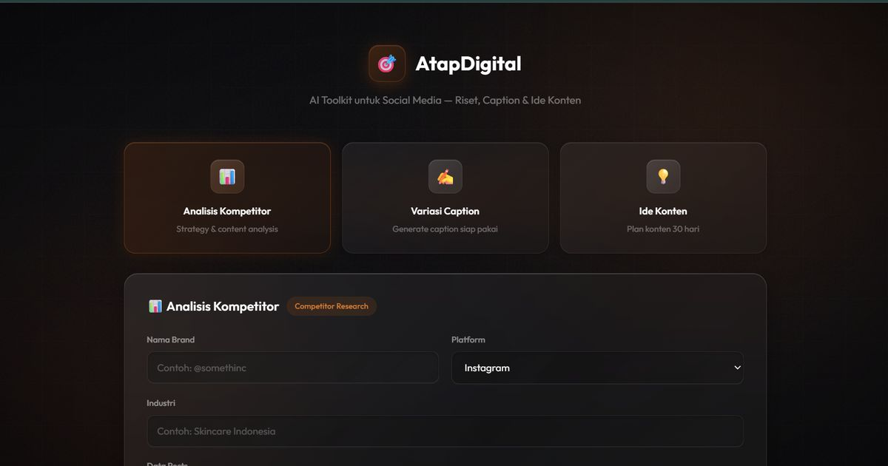
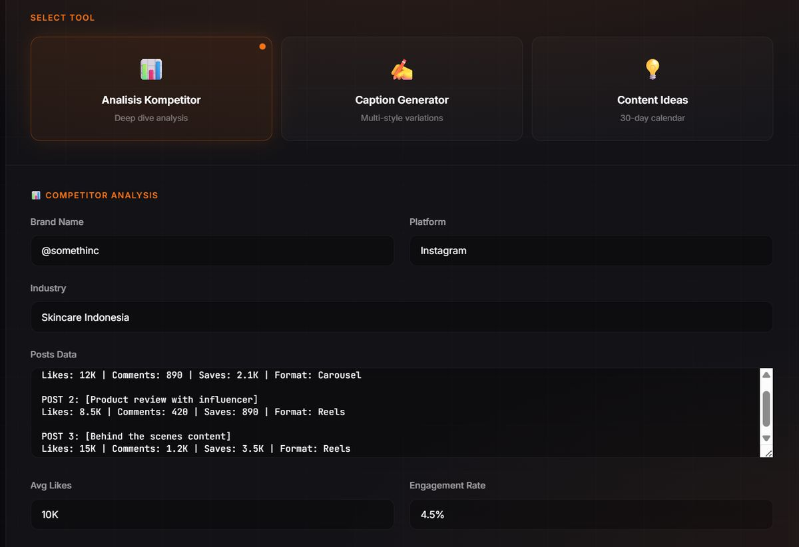
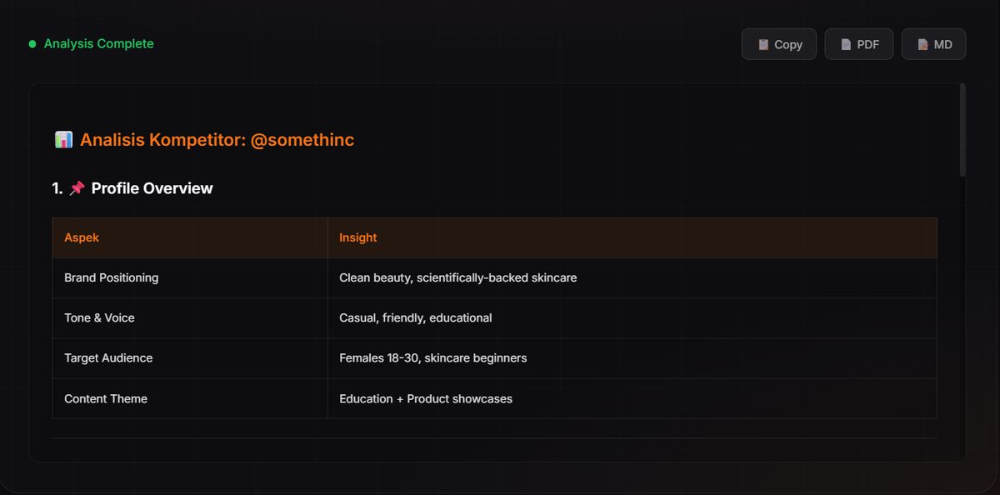
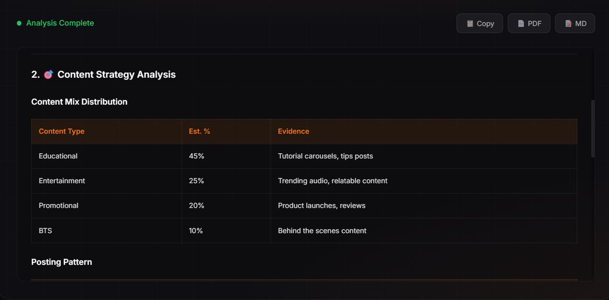
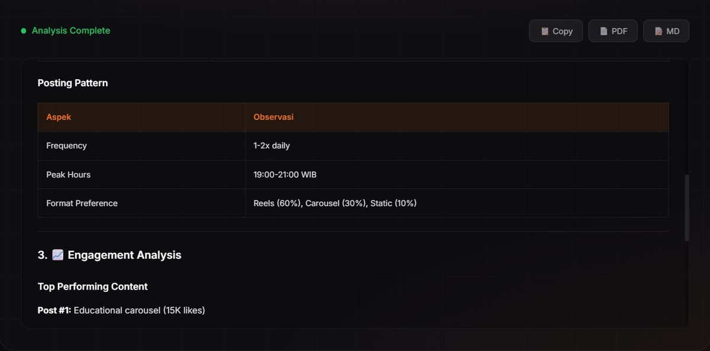
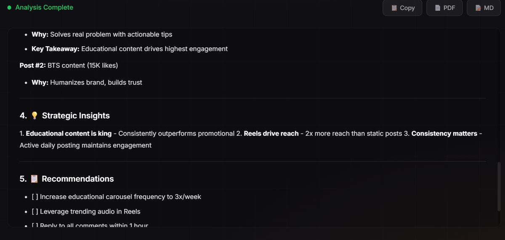
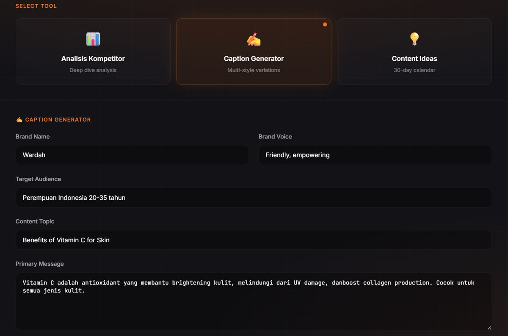
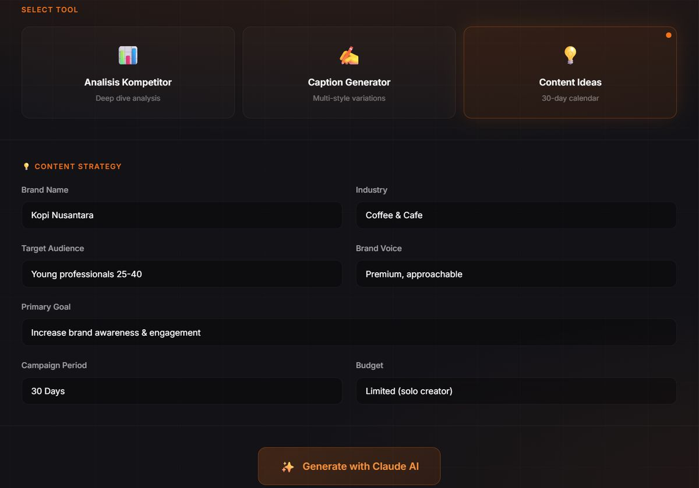
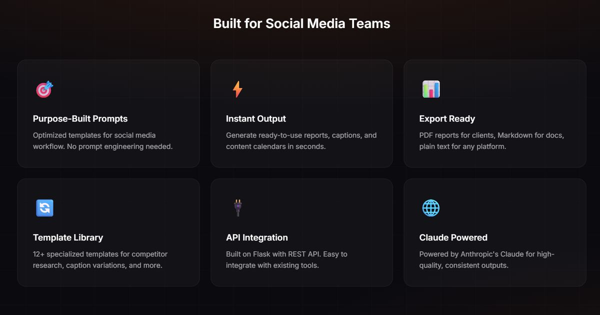

Project documentation — № 04
AtapDigital AI
A Claude-powered social media toolkit for agency content work — research competitors, generate captions, and plan 30-day calendars without writing prompts from scratch.

Project documentation — № 04
A Claude-powered social media toolkit for agency content work — research competitors, generate captions, and plan 30-day calendars without writing prompts from scratch.
AtapDigital AI packages the social-media workflow of a small agency into three tools and 12+ purpose-built prompt templates on Claude 3.5 Sonnet. The person using it never has to do prompt engineering — the templates encode it. Pick a tool, fill in the client context, and get an exportable report, captions, or a month of content ideas.
Multi-client support keeps each client's brand voice and audience settings separate, and every output exports to PDF for clients or Markdown for documentation.
Deep-dive competitor analysis: profile overview, content strategy, engagement metrics, and actionable recommendations.
Multi-style caption variations based on brand voice, target audience, and content topic.
30-day content calendars with topic suggestions, posting patterns, and campaign strategies.
Brand positioning, tone & voice, target audience, content theme.
Content-mix distribution (educational, entertainment, promotional, BTS) and posting patterns.
Top-performing content with metrics and engagement-rate calculation.
Data-driven recommendations for content optimization.
Recommendations formatted ready to implement.
Flask backend server with Claude API integration.
Core AI integration module with the Anthropic SDK.
12+ prompt templates for the social media workflow.
Web interface and HTML templates.
Python dependencies.








